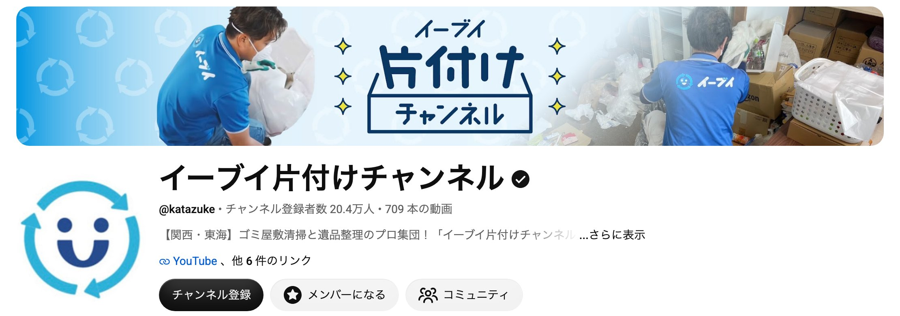
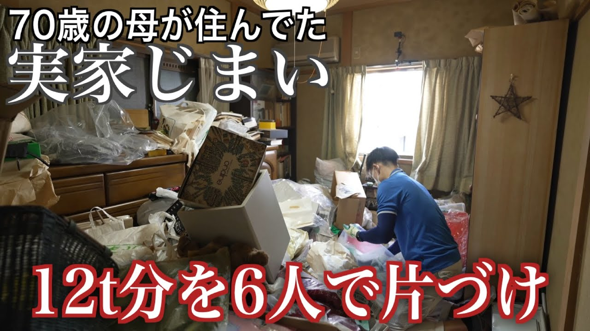
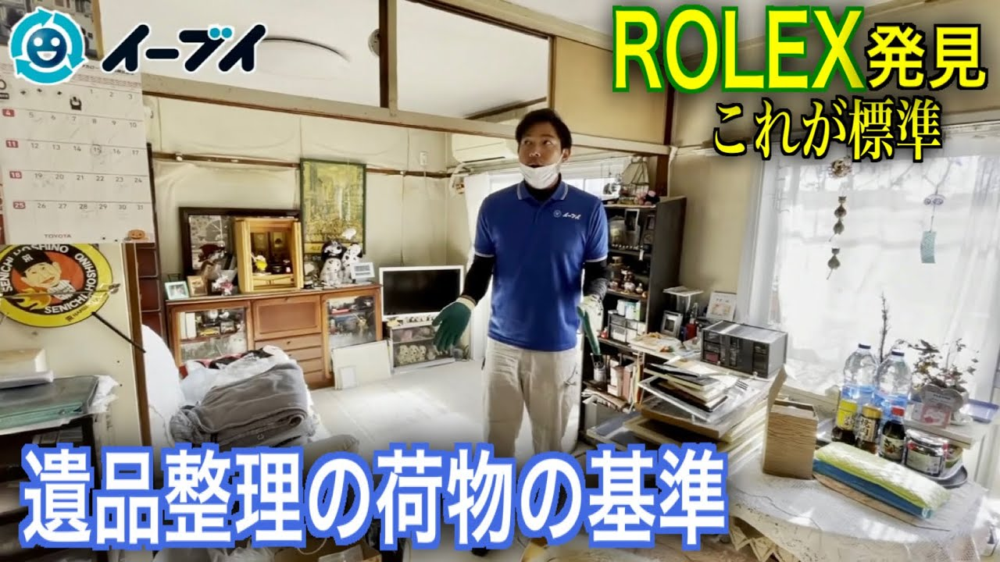
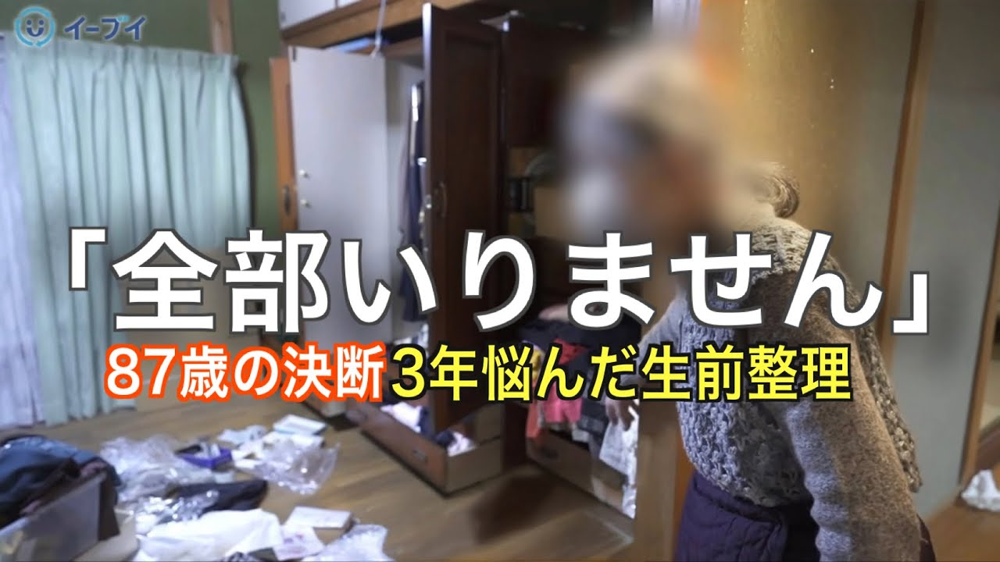

家政夫のアニキ 御中
YouTube運用
ご提案資料
愛知の片付け・遺品整理のご依頼を
YouTubeから集めるご提案
2026年11月15日
01 前提の共有
現在の集客と、YouTubeで得られる効果
ホームページ・Instagram
集客が安定しない
作業実績は見せているが
依頼の数に波がある
月によって問い合わせの
数が変わり、先の予定を
立てにくい状態です。
相見積もり
価格競争になる
安さで比べられ
値下げしないと決まらない
不用品回収は業者が多く
料金の安さだけで
選ばれやすい状態です。
YouTube
ご提案
動画でアニキを見た人から
依頼が来る
片付けの前に調べる人が
現場の動画を見て、アニキに
頼むと決めてから連絡します。
※前回のお打ち合わせで伺ったお話をもとに、弊社で整理したものです。
家政夫のアニキ御中 YouTube運用 ご提案資料 ｜ 02
02 YouTubeの一番のメリット
顧客の質の向上
相見積もりの問い合わせ
いちばん安い
業者を探す人
何社にも見積もりを頼み
料金だけで比べるので
値下げの話から始まります。
YouTubeで得られること
アニキに頼みたい人
からの依頼
「遺品整理 費用」などで調べ
作業の動画を何本か見て
納得した人から連絡が来ます。
再生数は追いません。愛知・岐阜・三重で片付けを頼みたい人に絞って届けます。
家政夫のアニキ御中 YouTube運用 ご提案資料 ｜ 03
03 チャンネルの方針
実家の片付けと遺品整理の現場を
遺品整理士の家政夫のアニキが見せるチャンネル
1本ごとの作り
片付けの悩み → アニキの現場で答えを見せる
例：親の家が物であふれている → 3日間の片付けに密着 ／ 費用が心配 → 買取で作業料金を相殺した例
誰に
愛知・岐阜・三重に
実家がある40〜60代
親の家の片付けを
考えている子世代と
その親です。
何を
作業の流れと
料金の内訳
かかった費用や買取の
金額まで見せて、頼む前の
不安をなくします。
ゴール
片付け・遺品整理の
見積もり依頼
公式LINEで部屋の写真を
送ってもらい、無料の
出張見積もりにつなげます。
家政夫のアニキ御中 YouTube運用 ご提案資料 ｜ 04
04 片付けのYouTube市場
市場の広い、実家の片付けのYouTube

実家の片付け・遺品整理・生前整理を扱った回（再生数は2026年11月10日時点）

22.5万回

19.3万回

13.8万回
家政夫のアニキ御中 YouTube運用 ご提案資料 ｜ 05
05 狙う視聴者
愛知・岐阜・三重で、実家の片付けを考える人
視聴者1
離れて暮らす親の家を
片付けたい40〜60代
実家が遠くて通えない。
立ち会えるかも不安。
SEO：実家 片付け 業者
遺品整理 立ち会いなし
視聴者2
親を亡くし
遺品整理が必要な人
何から手をつけるか
いくらかかるか分からない。
SEO：遺品整理 費用
遺品整理 愛知
視聴者3
自分の生前整理を
考える60〜70代
子どもに迷惑をかけたくない。
売れる物は売りたい。
SEO：生前整理 業者
不用品 買取 回収
愛知に絞る理由
愛知に絞った片付け・遺品整理のチャンネルは、まだ少ない
片付けを頼む人は、家まで来てもらえる近くの業者を探すので、地域を絞っても問い合わせの数は十分に見込めます。
全国向けの片付けチャンネル
登録者 20.4万人
愛知に絞った片付け・遺品整理チャンネル
いちばん大きくて 7,380人
愛知の主な片付け・遺品整理チャンネル（2026年11月10日時点）：愛知遺品整理天善（名古屋市）7,380人／遺品整理のファーストクリーニング 38人／株式会社トリプルエー（名古屋市）12人。
※視聴者像は想定です。家政夫のアニキ様に実際に来ているご相談に合わせて直します。
家政夫のアニキ御中 YouTube運用 ご提案資料 ｜ 06
06 企画の切り口
頼む前に調べることへの答えと、地元の現場
1
遺品整理、いくらかかる？
→ 間取りごとの料金と、実際の見積もり
2
実家の片付け、何から始める？
→ 残す物と手放す物の分け方
3
捨てる前に確認したい、売れる物
→ 買取で作業料金が0円になった例
4
他社で断られた物、回収できる？
→ 大型家具・家電の取り外しと回収
5
遠くに住んでいても頼める？
→ 立ち会いなし・鍵預かりの流れ
6
生前整理は何歳から始める？
→ 子どもに負担を残さない片付け方
7
岡崎市の3LDK、丸ごと片付け密着
→ 作業の一部始終と、かかった費用
8
3日間・トラック15台の遺品整理密着
→ 作業料金100万円、買取25万円の内訳
「密着」の回では、岡崎市など地元の現場で、作業の様子と費用をそのまま見せます。
家政夫のアニキ御中 YouTube運用 ご提案資料 ｜ 07
07 動画の2本柱
現場密着と、家政夫のアニキが事業を作る過程
① 現場密着 ｜ 目的：頼む前の不安をなくす
現場に密着する動画
片付けの前と後、作業の手順、料金の内訳まで
見せます。「この人なら家に上げても大丈夫」と
思ってもらう回です。
② 事業づくりの過程 ｜ 目的：ファンを増やす
アニキの挑戦を追う動画
男性の家政夫というサービスを
どう形にしていくかを、毎回見せます。
できあがる前から見た人が、ファンになります。
事業づくりの過程は、将来フランチャイズの加盟者を集めるときにも使えます。
家政夫のアニキ御中 YouTube運用 ご提案資料 ｜ 08
08 問い合わせまでの流れ
YouTubeからの流入を、公式LINE経由で見積もり依頼へ
STEP 1
片付けの
情報収集
費用や業者を
調べて動画を見る
STEP 2
現場の
動画を見る
作業の様子と
アニキを知る
STEP 3
公式LINEに
写真を送る
部屋の写真で
見積もりを相談
STEP 4
無料の
出張見積もり
家に伺って
金額を出す
GOAL
片付け・
遺品整理の
ご依頼へ
動画の概要欄に、電話番号と公式LINEのリンクを載せます。
家政夫のアニキ御中 YouTube運用 ご提案資料 ｜ 09
09 効果
YouTubeで得られる効果
効果1
資産になる動画が
24時間回り続ける
Instagramの投稿は数日で
流れますが、動画は公開後も
検索で見られ続けます。
月4本なら1年で48本です。
効果2
今の集客の
CVRが上がる
ホームページとInstagramに
YouTubeのリンクを貼ります。
作業の様子を見てから
頼む人が増えます。
効果3
AI検索で
上位に表示されやすい
ChatGPTやGoogleのAIに
片付けの業者を聞いた人に
アニキの動画が
答えとして出やすくなります。
※GoogleのAI Overviewsが答えに使う情報源のうち、29.5%がYouTubeで、サイト別で1位です（BrightEdge調べ、2024年5月〜2025年9月）。
家政夫のアニキ御中 YouTube運用 ご提案資料 ｜ 10
10 運用の実績
登録者が少なくても、問い合わせにつながる実績
大阪の断熱リフォーム会社
登録者 約740人で
YouTube経由の問い合わせ
月約10件
| 項目 | 数字 |
|---|---|
| 運用期間・本数 | 約1年、週1本のペースで投稿 |
| 登録者数 | 約740人 |
| 問い合わせ | YouTube経由で月約10件（大阪市内が中心） |
| 成約 | 1件100〜200万円の工事で、成約率7〜8割 |
社名は非公開です。チャンネルは打ち合わせの場でお見せします。
家政夫のアニキ御中 YouTube運用 ご提案資料 ｜ 11
11 問い合わせ数の目標
1年後に、月10件の問い合わせ
3か月後
月1〜3件
最初の問い合わせが
入り始めます
半年後
月5件
反応のよい企画を増やして
件数を伸ばします
1年後
月10件
月10件の問い合わせを
安定して得ます
※目標の数字です。撮影の本数や、動画にできる現場の数によって変わります。
家政夫のアニキ御中 YouTube運用 ご提案資料 ｜ 12
12 運用プラン
運用プランと料金
まず始める
月2本プラン
本数
隔週1本（月2本）
中身
企画・撮影・編集・投稿・分析
撮影
弊社が現場に伺って撮影
料金
月額15万円〜
おすすめ
月4本プラン
本数
毎週1本（月4本）
中身
企画・撮影・編集・投稿・分析
撮影
弊社が現場に伺って撮影
料金
月額25万円〜
ご負担は撮影へのご出演のみです。
※動画の尺や撮影の手間によって、金額が変わることがあります。
家政夫のアニキ御中 YouTube運用 ご提案資料 ｜ 13
13 今後の流れ
今後の流れ
01
本日
方針のご相談
現場密着と事業づくりの、どちらから始めるかを決めます
02
ご依頼後
企画のご提案
狙う検索語と、最初の4本の企画をお送りします
03
撮影の開始
現場の予定に合わせて撮影日を決め、制作を始めます
04
運用・改善
毎月、再生数と問い合わせ数を見て、次の企画を直します
家政夫のアニキ御中 YouTube運用 ご提案資料 ｜ 14